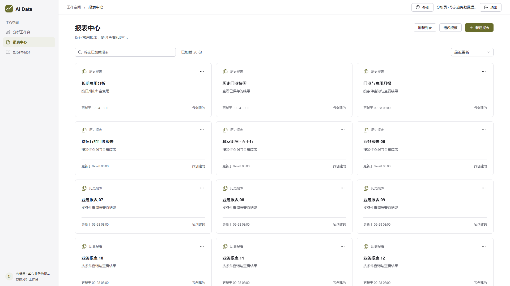
01 · 1920 × 1080
报表中心
卡片入口、名称与说明、搜索及排序；截图使用既有多内容报表样例。
12 张桌面页面原图均为 1920 × 1080（16:9），另附 1 张窄屏编辑截图。图片采集自本轮 Web 生产构建，使用隔离验收数据。点击图片可打开原图。

卡片入口、名称与说明、搜索及排序；截图使用既有多内容报表样例。
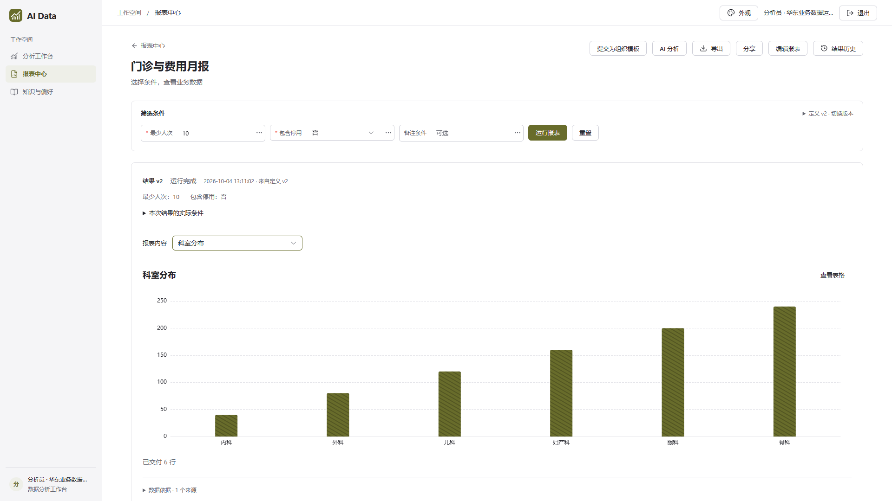
单个图表结果、顶部条件、实际运行范围；旧报表可选择其中一项内容。
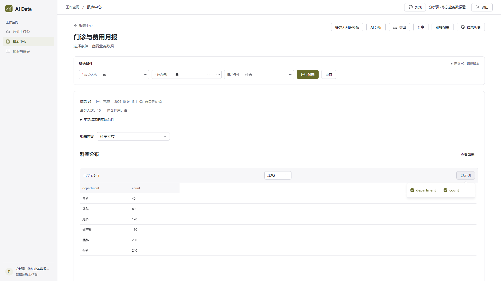
同一份结果切换明细表，支持选择显示列。
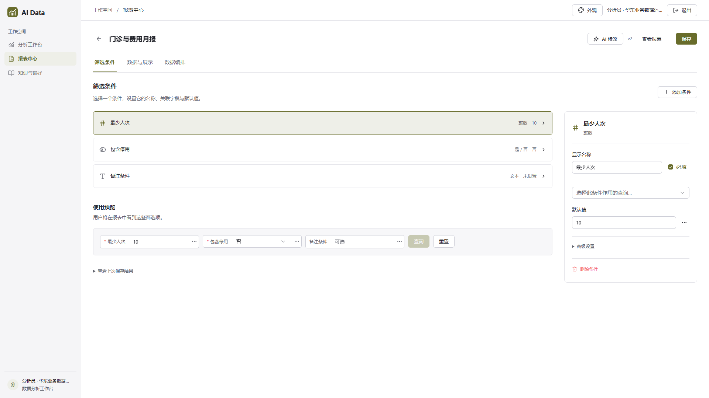
筛选项、默认值、参数绑定及使用预览。
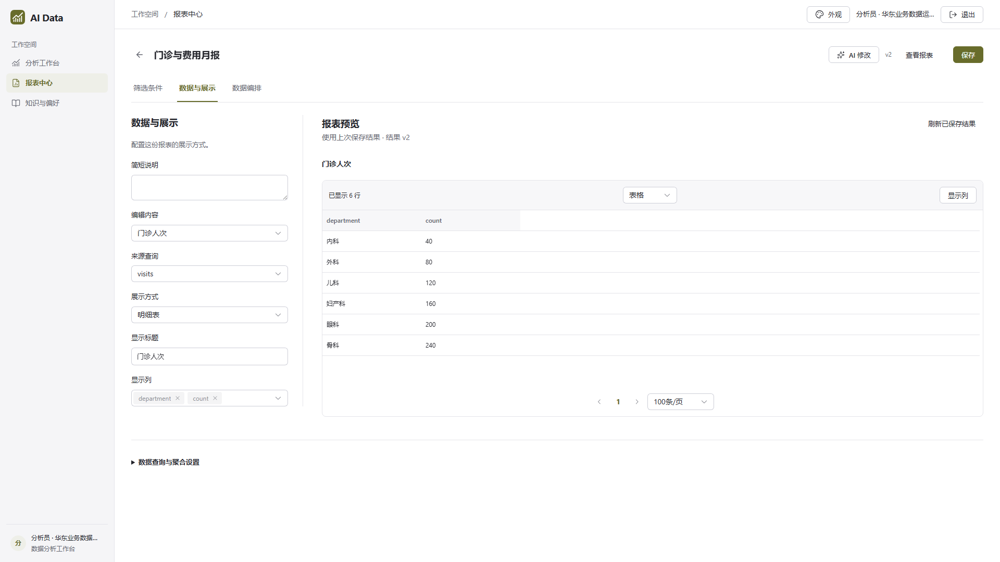
名称、说明、展示方式与上次保存结果预览。
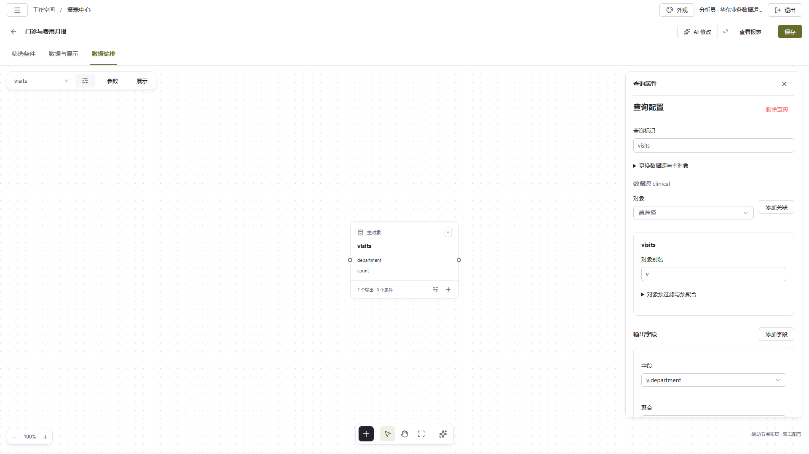
已有查询节点、数据编排与属性面板。
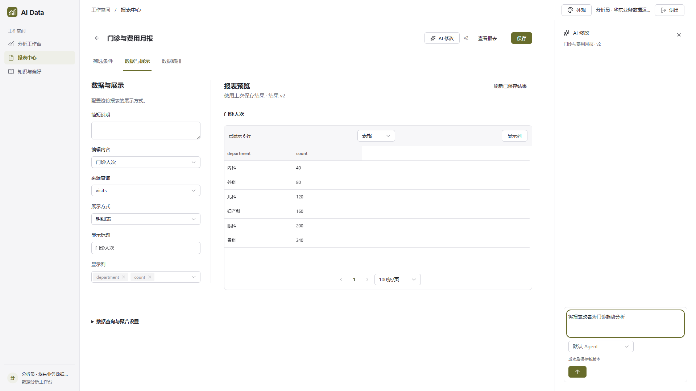
AI 修改侧栏；图中为提交前状态，过程回放和完成折叠另有行为测试。
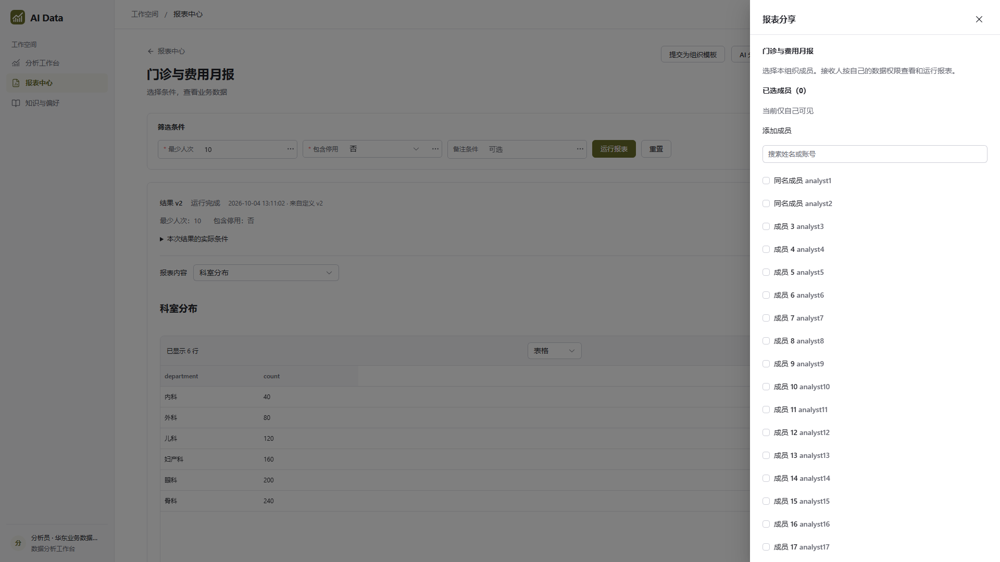
组织成员搜索、分页及报表访问授权。
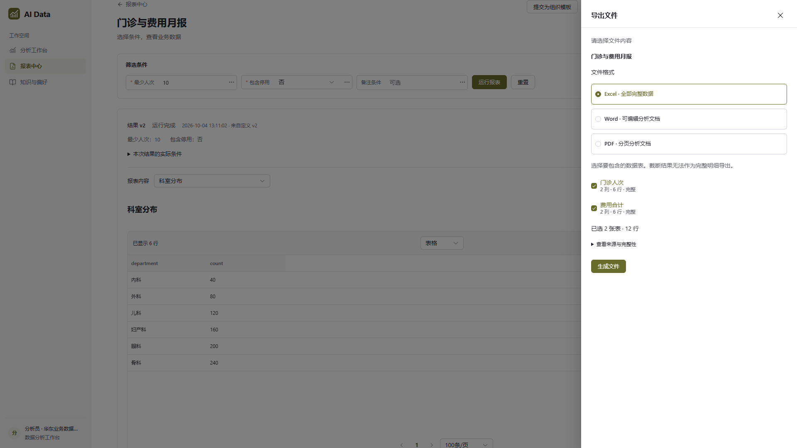
Excel、Word、PDF 格式选择与固定结果范围。
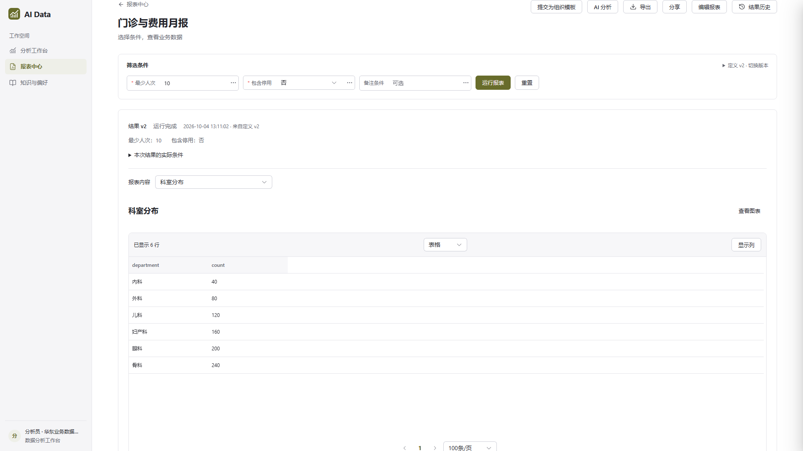
固定结果版本、来源定义及历史切换。
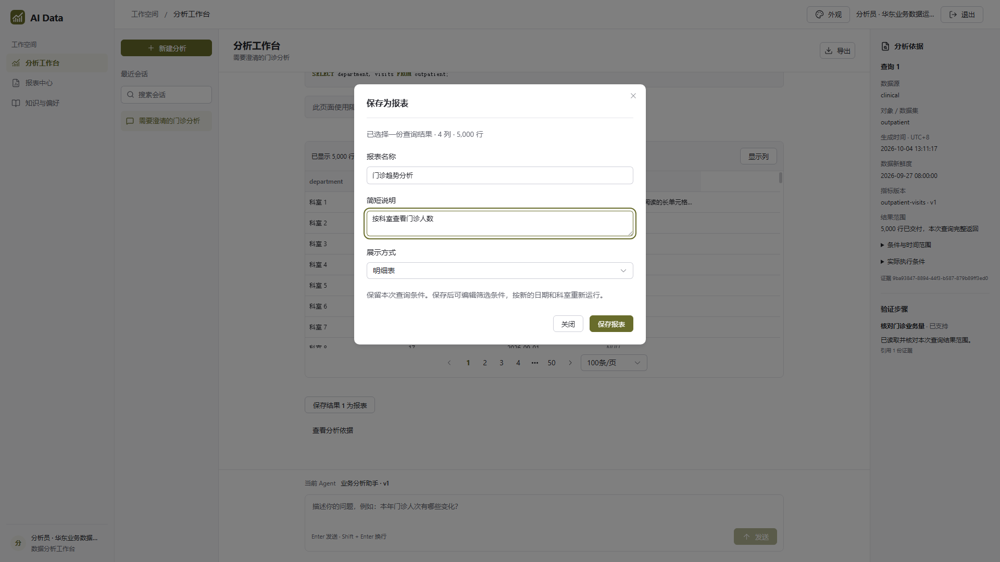
选择一份对话结果，填写名称和说明后保存为报表。
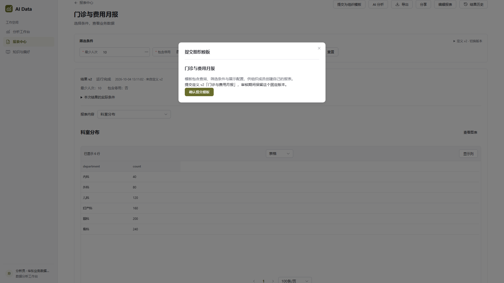
提交指定定义版本，进入组织模板审核流程。
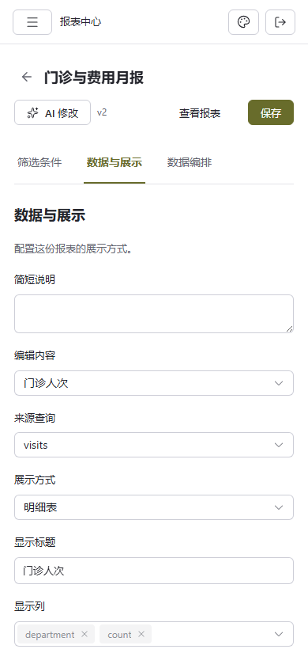
390 × 844 窄屏编辑布局。